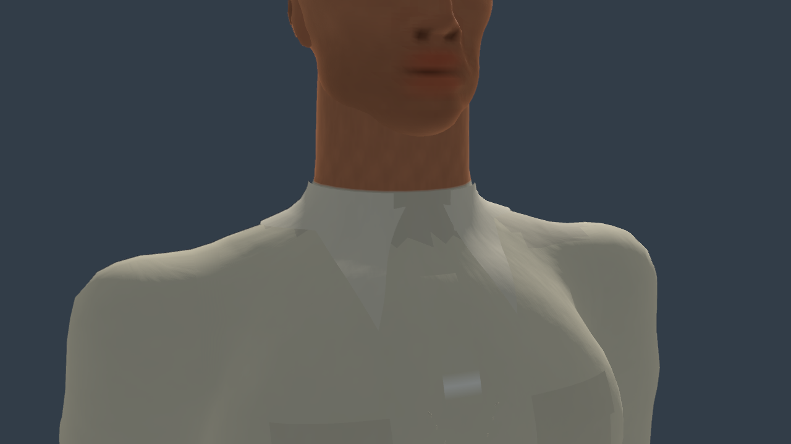
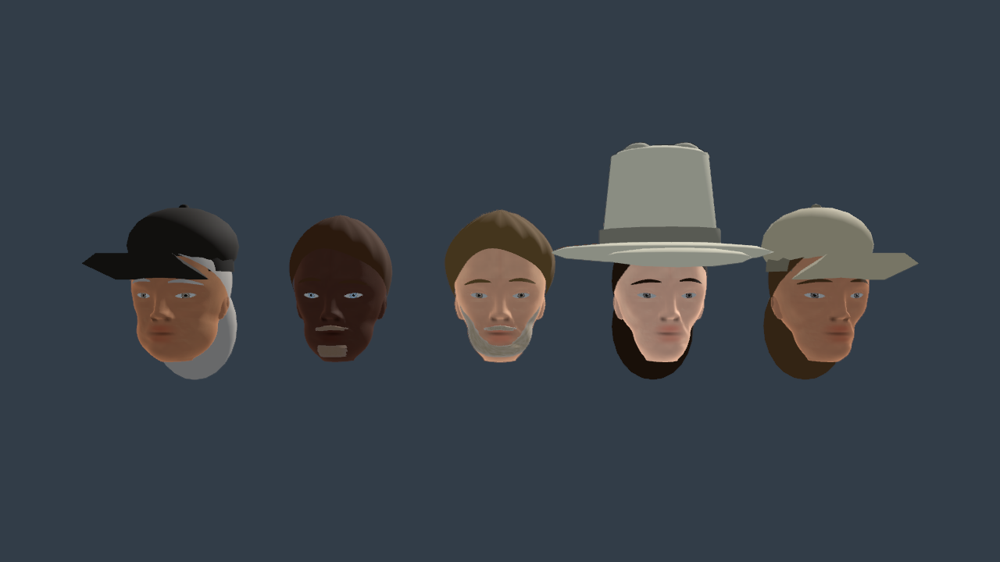
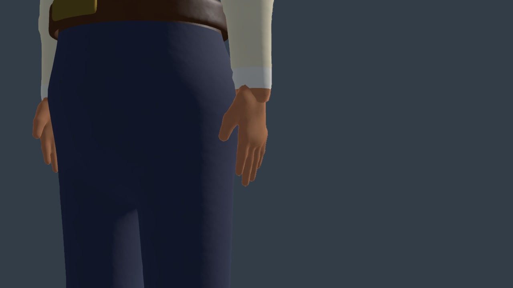
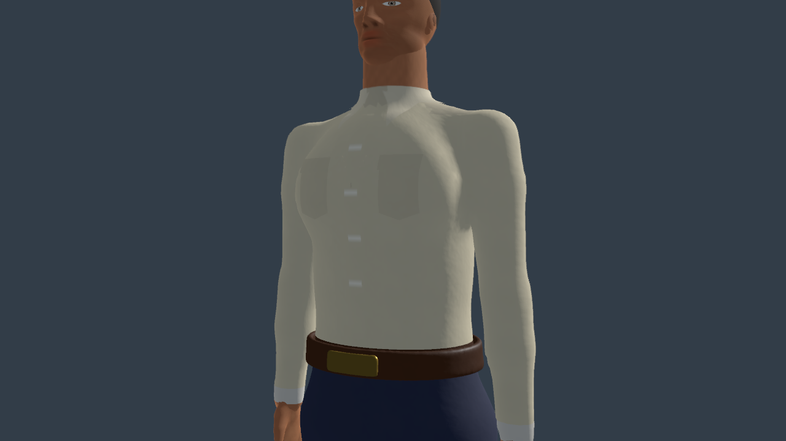

Same stage, camera and light (tools/character_review.gd, with the new collar view). "Before" is the tree Codex left mid-task (cache v17: tailored collar/placket/pockets, 3 mm hands, surface beard). "After" is cache v18: collar leaves layered over the stand, pocket flaps, placket 5 mm, hands at 4 mm (10,516 → 5,832 triangles each), the beard sheet sunk under the skin at its edges with a tapered moustache.



